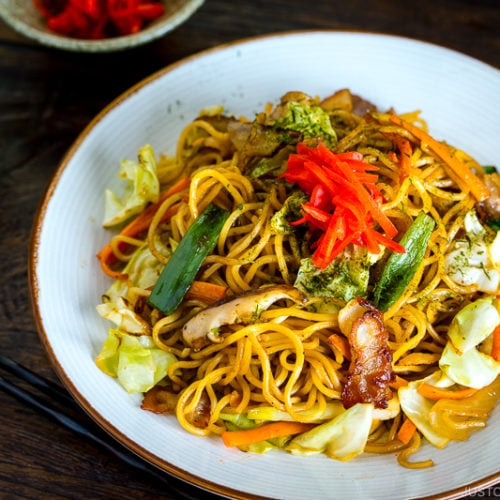

Yakisoba

Description
Yakisoba noodles look similar to ramen noodles, but they are slightly different. They are made of wheat and best
when stir-fried.
A traditional yakisoba dish is made with thin slices of pork, carrots, cabbage, onions and a
signature sweet and salty sauce.
Ingridients
- Red Bell Pepper
- Carrot
- Green Onions
- Boneless Chicken
- Cabbage Head
- Yellow Onion
- Yakisoba Noodles
Steps
- Combine all your sauce ingredients together
- Prep your veggies and cook your noodles.
- Cook all your veggies in a skillet until golden brown.
- Cook your chicken in a separate pan.
- Add your veggies back into your chicken pan. Add in the sauce and stir to combine.
- Add your noodles into the mixture. Cook for a few minutes. Serve!
Return to the main page